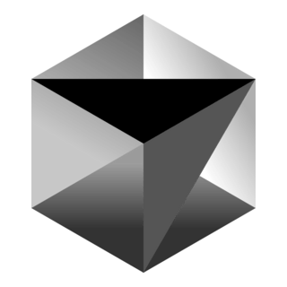
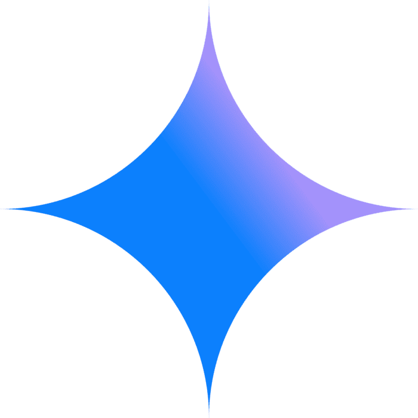
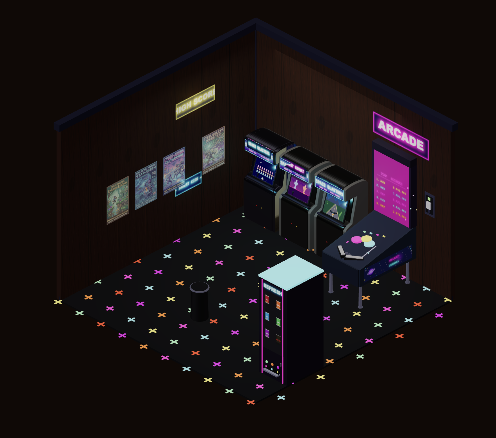

01
Research
When I'm diving into a new space, I use AI to get a handle on the jargon, what competitors are doing, so I can focus on what users actually care about.
Process & reflection
I've been working AI into my design process for about a year. It helps with some things. It slows me down on others.

Cursor
Google Gemini Nano Banana ProI use Claude Code, Cursor, Google Gemini, and Nano Banana Pro, both for client work and just to see what's possible. The projects below were built entirely through prompting.

This Portfolio
Every animation and interaction on this site (the TOC indicator, the section icon draws, the scroll fade-ins) was built through prompting, not written by hand.

In progressRetro Arcade
A browser-based arcade with playable games, a score system, and a retro aesthetic. Built entirely through prompting with Claude Code.
GitHubThesis Prototype
A functional prototype built from my grad design thesis. Real interactions and logic, not just static screens.
Research
When I'm diving into a new space, I use AI to get a handle on the jargon, what competitors are doing, so I can focus on what users actually care about.
Planning & Validation
I treat AI as a collaborator and have it poke holes in my early ideas. I regularly use Claude Code's Plan mode to talk through complex logic, which helps me catch edge cases and blind spots before I commit to a direction.
Writing
Whether it's keeping UX copy clear and concise, writing comprehensive documentation, or drafting scripts for user interviews, I use Google Gemini to help improve my writing.
Concepts/Wireframes
I use Claude Code alongside the Figma MCP to integrate AI directly into my design canvas, bridging the gap between strategy and layout. It lets me instantly map out my thoughts, structure user flows, and generate early wireframes to validate the information architecture.
Prototyping
I use Cursor and Claude Code to build functional prototypes. Baking in real logic and design tokens allows for genuine user exploration and creates a much smoother translation from design to code.
Data & Analytics
I use AI to make sense of dense data. It quickly parses through test results and metrics to find the underlying user insights, turning raw information into clear validation for where the product should go next.
"AI gets me to 60–70% quickly. Getting that last 10–30% of polish often takes longer through prompting than just doing it myself."